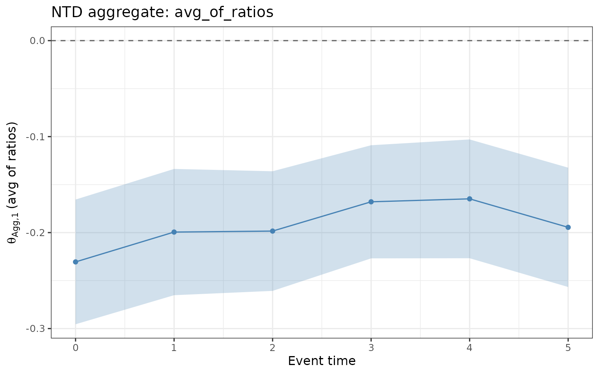
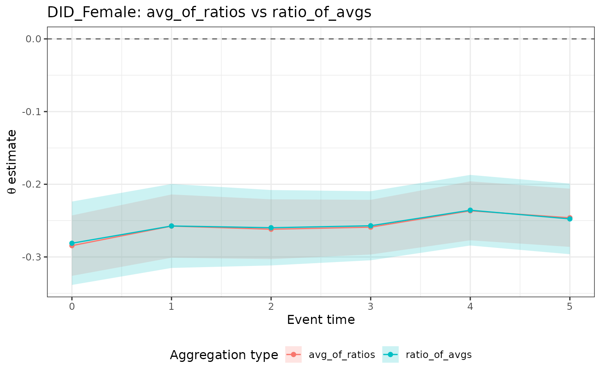
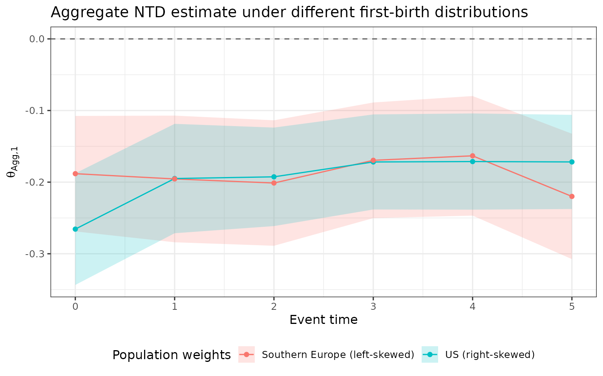
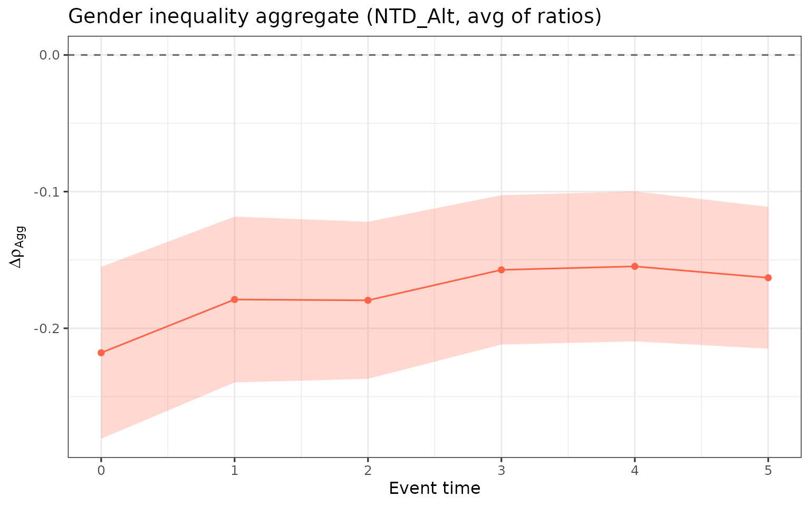

Overview
multiple_treatment_group_analysis() estimates
child-penalty effects separately for each treatment group
(age at first birth). Because groups differ in their baseline earnings,
age composition, and selection, a single group’s estimate is not
directly comparable to another’s. aggregate_estimands()
collapses the group-specific estimates into a single number per event
time, answering the question: what is the average effect across the
distribution of first-birth ages?
Three aggregate estimands are available:
- avg_of_ratios (): weighted average of each group’s normalized effect . Preferred because normalization happens within each group before aggregation, so baseline differences do not inflate the average.
- ratio_of_avgs (): ratio of the weighted-average ATE to the weighted-average APO. This implicitly up-weights high-earning groups (because a given ATE is a smaller share of a larger APO), so it differs from when earnings vary across groups.
-
gender_ineq
():
weighted average of
NTD_Alttheta estimates — the aggregate gender-inequality penalty.
Simulate data
library(childpen)
set.seed(42)
data <- simulate_data(n_individuals = 5000)
head(data)
#> id female age D Y_inf Y
#> 1 1 1 20 25 18881 18881
#> 2 1 1 21 25 20391 20391
#> 3 1 1 22 25 12439 12439
#> 4 1 1 23 25 52948 52948
#> 5 1 1 24 25 157316 157316
#> 6 1 1 25 25 49891 51434Run estimation
We estimate all methods for treatment groups 25–34 with five post-treatment periods.
res <- multiple_treatment_group_analysis(
data = data,
treatment_groups = 25:34,
periods_post = 5,
periods_pre = NULL,
verbose = FALSE
)Basic aggregation
Calling aggregate_estimands() with default arguments
applies uniform weights across whichever treatment groups contribute an
estimate to each event-time cell.
agg <- aggregate_estimands(res)
head(agg)
#> event_time estimand method agg_type est se n_groups
#> 1 0 theta DID_Female avg_of_ratios -0.28443 0.021212 10
#> 2 1 theta DID_Female avg_of_ratios -0.25753 0.022197 10
#> 3 2 theta DID_Female avg_of_ratios -0.26187 0.020996 10
#> 4 3 theta DID_Female avg_of_ratios -0.25902 0.019189 10
#> 5 4 theta DID_Female avg_of_ratios -0.23651 0.020701 10
#> 6 5 theta DID_Female avg_of_ratios -0.24610 0.020419 10
#> ci_l ci_h
#> 1 -0.32601 -0.24286
#> 2 -0.30104 -0.21403
#> 3 -0.30302 -0.22071
#> 4 -0.29663 -0.22141
#> 5 -0.27709 -0.19594
#> 6 -0.28613 -0.20608The output has one row per
event_time × estimand × method × agg_type combination. The
n_groups column records how many treatment groups
contributed — useful for spotting cells where edge-of-sample groups drop
out due to max_age/min_age bounds.
Plot aggregate results
Plot the avg_of_ratios aggregate for the NTD method
across event times, with 95% confidence ribbons.
agg |>
filter(agg_type == "avg_of_ratios", method == "NTD", estimand == "theta") |>
ggplot(aes(x = event_time, y = est, ymin = ci_l, ymax = ci_h)) +
geom_ribbon(fill = "steelblue", alpha = 0.25, color = NA) +
geom_line(color = "steelblue") +
geom_point(color = "steelblue") +
geom_hline(yintercept = 0, linetype = "dashed", color = "grey40") +
labs(
x = "Event time",
y = expression(theta[Agg * "," * 1] ~ "(avg of ratios)"),
title = "NTD aggregate: avg_of_ratios"
)
Compare aggregation types
avg_of_ratios and ratio_of_avgs answer the
same underlying question but weight groups differently. When high
first-birth-age groups have higher counterfactual earnings than low
first-birth-age groups, ratio_of_avgs assigns them more
weight (the APO enters the denominator for each group before the ratio
is formed across groups). The two estimands therefore diverge whenever
earnings are heterogeneous across groups.
agg |>
filter(
agg_type %in% c("avg_of_ratios", "ratio_of_avgs"),
method == "DID_Female",
estimand == "theta"
) |>
ggplot(aes(
x = event_time,
y = est,
ymin = ci_l,
ymax = ci_h,
color = agg_type,
fill = agg_type
)) +
geom_ribbon(alpha = 0.2, color = NA) +
geom_line() +
geom_point() +
geom_hline(yintercept = 0, linetype = "dashed", color = "grey40") +
labs(
x = "Event time",
y = expression(theta ~ "estimate"),
title = "DID_Female: avg_of_ratios vs ratio_of_avgs",
color = "Aggregation type",
fill = "Aggregation type"
) +
theme(legend.position = "bottom")
If the two lines are similar, earnings are approximately homogeneous across groups. Divergence is a sign that the treatment-group distribution interacts with baseline earnings levels, and the researcher must decide which weighting regime is more policy-relevant.
Custom weights
By default all treatment groups receive equal weight. Researchers often want to weight groups by their empirical share in a target population. Below we contrast two stylized distributions:
- Right-skewed (mimicking the US): most first births concentrate at younger ages.
- Left-skewed (mimicking Southern Europe): most first births concentrate at older ages.
groups <- as.character(25:34)
# Right-skewed: more weight on younger groups
w_us <- setNames(
c(0.22, 0.20, 0.17, 0.13, 0.10, 0.08, 0.05, 0.03, 0.01, 0.01),
groups
)
# Left-skewed: more weight on older groups
w_se <- setNames(
c(0.01, 0.01, 0.03, 0.05, 0.08, 0.10, 0.13, 0.17, 0.20, 0.22),
groups
)
agg_us <- aggregate_estimands(res, weights = w_us)
agg_se <- aggregate_estimands(res, weights = w_se)
bind_rows(
mutate(agg_us, population = "US (right-skewed)"),
mutate(agg_se, population = "Southern Europe (left-skewed)")
) |>
filter(
agg_type == "avg_of_ratios",
method == "NTD",
estimand == "theta"
) |>
ggplot(aes(
x = event_time,
y = est,
ymin = ci_l,
ymax = ci_h,
color = population,
fill = population
)) +
geom_ribbon(alpha = 0.2, color = NA) +
geom_line() +
geom_point() +
geom_hline(yintercept = 0, linetype = "dashed", color = "grey40") +
labs(
x = "Event time",
y = expression(theta[Agg * "," * 1]),
title = "Aggregate NTD estimate under different first-birth distributions",
color = "Population weights",
fill = "Population weights"
) +
theme(legend.position = "bottom")
When younger groups bear larger penalties than older groups (or vice versa), the choice of weight vector shifts the aggregate estimate. Reporting both provides a sensitivity check on how much the aggregate depends on the first-birth distribution.
Gender inequality aggregate
The gender_ineq aggregate
()
is the weighted average of NTD_Alt theta estimates across
treatment groups. It measures how parenthood affects the female-to-male
earnings ratio: negative values indicate that mothers bear a larger
proportional penalty — the female-to-male earnings ratio is lower
post-birth than the counterfactual ratio.
agg |>
filter(agg_type == "gender_ineq", estimand == "theta", method == "NTD_Alt") |>
ggplot(aes(x = event_time, y = est, ymin = ci_l, ymax = ci_h)) +
geom_ribbon(fill = "tomato", alpha = 0.25, color = NA) +
geom_line(color = "tomato") +
geom_point(color = "tomato") +
geom_hline(yintercept = 0, linetype = "dashed", color = "grey40") +
labs(
x = "Event time",
y = expression(Delta * rho[Agg]),
title = "Gender inequality aggregate (NTD_Alt, avg of ratios)"
)
A flat, positive profile indicates a persistent gender gap; a declining profile suggests the gap narrows as parents age away from the birth event.